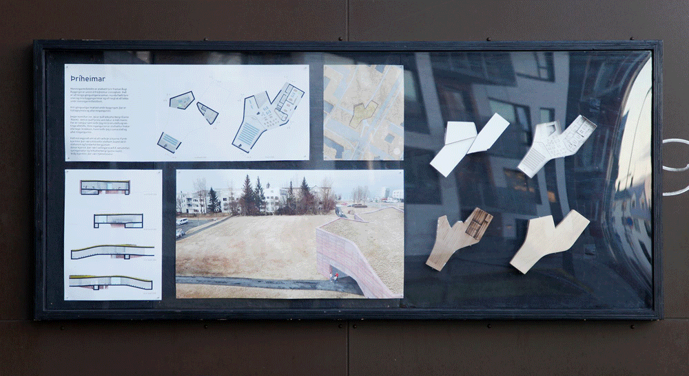
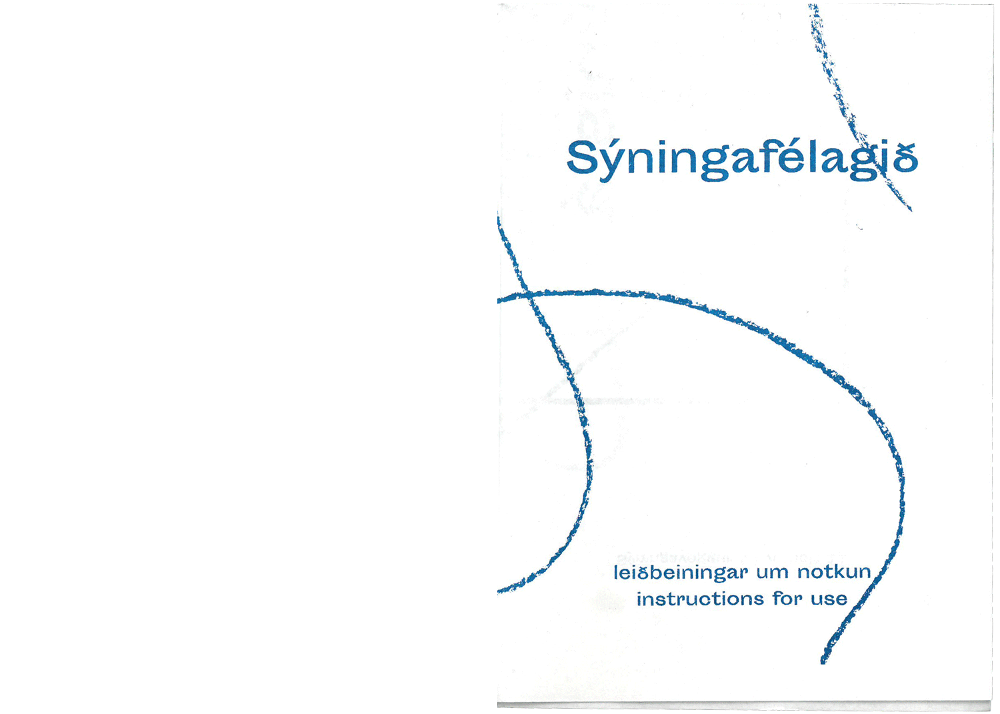

Sýningafélagið is the result of a group exploration in changing social culture at the design department at Iceland Academy of the Arts. The project has become an exhibition space called ”boxið”, were students can showcase what they’re working on. In addition to this a set of rules/instructions were riso printed as A6 foldable booklets.



